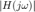
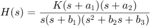
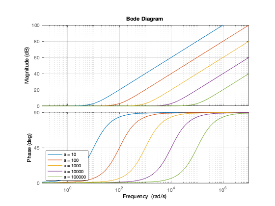
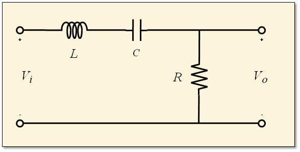

Práctica 7: Respuesta en frecuencia, Simulación en MATLAB
Contents
- Respuesta en frecuencia
- Ejemplo:
- Gráficas de Bode
- Gráficas de bode de constantes
- Gráficas de bode de potencias
- Gráficas de bode de factores lineales
- Gráficas de bode de factores cuadraticos
- Analisis de un sistema de segundo orden no amortiguado
- Representación de un sistema LTI en MATLAB
- Respuesta al escalón (condiciones iniciales cero)
- Polos y ceros del sistema
- Respuesta al impulso (condiciones iniciales cero)
- Respuesta a entradas sinusoidales
- Modelo de suspensión de un carro
- Parametros del modelo
- Función de transferencia: Entrada- Salida
- Ceros y polos del sistema
- Respuesta del sistema al escalón (conidiciones iniciales cero)
- Respuesta al impulso (condiciones iniciales cero)
- Respuesta a una entrada sinusoidal
- Respuesta en frecuencia del sistema
- Efectos de variar el amortiguamiento en la respuesta en frecuencia
- Efecto de variar la masa en la respuesta en frecuencia
- Entregables:
Respuesta en frecuencia
Los filtros (sistemas LTI) son importantes en el área de procesamiento de señales. Las caracteristicas del filtrado de un sistema diferencial LTI (ecuación diferencial con coeficientes constantes y condiciones iniciales cero) están determinadas por lo siguiente:
Si la entrada a un sistema BIBO-estable es
La salida en estado estacionario (coincide con la solución particular o forzada), para un sistema asintoticamente estable, será
Podemos decir lo siguiente: Si una señal coseno (o seno) es la entrada de un sistema LTI BIBO-estable y asintoticamente estable, la respuesta en estado estacionario es un escalamiento vertical y una traslación horizontal de la señal de entrada.
Si el escalamiento vertical dado es muy pequeño la respuesta en estado estacionario tiene un efecto despreciable en la salida del sistema, entonces diremos que el sistema filtra a esta señal ("no la deja pasar para llegar a la salida del sistema", por lo que los sistemas LTI son filtros) pero esto no siempre es el caso, podría suceder que el escalamiento vertical no sea tan pequeño, entonces la respuesta en estado estacionario no sería despreciable
El escalamiento vertical depende de dos cosas, de la estructura del sistema (cuantas derivadas hay en la entrada y la salida y los coeficientes de estas) y de los valores de . Así para un sistema fijo el escalamiento vertical y la traslación horizontal (o desfasamiento) depende solo de los valores de , esto es, de la frecuencia de la entrada (ya sea una función seno o coseno). Entonces sería conveniente tener registrados los escalamientos y traslaciones de la señal de salida en estado estacionario de alguna manera.
A la expresión se le conoce como la respuesta en frecuencia del sistema (es decir, la respuesta en frecuencia es la función de transferencia en el formato de transformada de Fourier) y la manera de registrar la información que contiene es mediante las gráficas  contra (gráfica de magnitud) y contra (gráfica de fase) (con de 0 a ) y precisamente estas gráficas nos ayudan a interpretar el sistema como filtro, estás gráficas son las que se estudian cuando se habla de la respuesta en frecuencia mas que la expresión análitica en si.
Ejemplo:
Encuentra la respuesta en frecuencia de
¿Cuál es la respuesta en estado estacionario cuando la entrada es ?
Se suele utilizar a la letra para escribir a la función de transferencia, aunque en este estudio nos conviene ver a la función de transferecia en su notación de transformada de Fourier, así sustituimos a
Aquí , entonces
Entonces la respuesta en estado estacionario es
Ahora podemos resolver este sistema para condiciones iniciales cero y la entrada establecida, observemos que la solución es la respuesta total y en principio la solución no permite mostrar la respuesta en estado estacionario encontrada, pero mediante simplificación se puede ver que coicide con la solución del ejemplo anterior. Este sistema es asintoticamente estable y por lo tanto BIBO estable, entonces la respuesta transitoria tiende a ser despreciable despúes de un largo tiempo, entonces si gráficamos la respuesta en estado estacionario encontrada en el ejemplo anterior tenemos que
syms t rg=laplace2016am([2 3 1],[5 1],[0 0],20*sin(3*t+2)*heaviside(t),10); tt=0:0.01:10; plot(rg,tt,10.228*sin(3*tt+0.3086),'k','DisplayName','Estado estacionario')
APLICAMOS TRANSFORMADA DE LAPLACE y subtituimos condiciones iniciales
2
2 Y(s) + 3 s Y(s) + s Y(s)
=
5 X(s) + s X(s)
SUBSTITUIMOS LA TRANSFORMADA DE LA ENTRADA
2
2 Y(s) + 3 s Y(s) + s Y(s)
=
300 cos(2) / 60 cos(2) 20 s sin(2) \ 100 s sin(2)
---------- + s | --------- + ----------- | + ------------
2 | 2 2 | 2
s + 9 \ s + 9 s + 9 / s + 9
DESPEJAMOS Y(s)
Y(s)=
2
300 cos(2) + 60 s cos(2) + 100 s sin(2) + 20 s sin(2)
------------------------------------------------------
4 3 2
s + 3 s + 11 s + 27 s + 18
DESARROLLAMOS LAS FRACCIONES PARCIALES DE Y(s)
Y(s)=
180 cos(2) 120 sin(2)
---------- - ----------
24 cos(2) - 8 sin(2) 13 13
-------------------- - -----------------------
s + 1 s + 2
48 cos(2) 396 sin(2) / 132 cos(2) 16 sin(2) \
--------- - ---------- + s | ---------- + --------- |
13 13 \ 13 13 /
- -----------------------------------------------------
2
s + 9
Aplicamos transformada inversa, asi la solución es
y(t)=
sin(3 t) sin(2) 132 sin(3 t) cos(2) 16 cos(3 t) sin(2) 16
------------------- - ------------------ - ------------------
13 13 13
/ 180 cos(2) 120 sin(2) \
+ exp(-t) (24 cos(2) - 8 sin(2)) - exp(-2 t) | ---------- - ---------- |
\ 13 13 /
cos(3 t) cos(2) 132
- -------------------
13
La función laplace2016am es una modificación de un programa que ya hemos utilizado donde nos regresa una ubicación para gráficar en donde corresponde a la respuesta en estado estacionario, no hay mayor importancia en esto solo es para un despliegue más amigable, puede consultar el código en el siguiente enlace .
A continuación calculamos la gráfica de Magnitud y de fase para el sistema antes mencionado, mediante la defición directa y mediante la herramienta de Matlab con la instrucción bode. Además observamos que estas gráfica tienen la información de la magnitud y angulo para diferentes valores de en particuñar cuando , hay que tener cuidado, la gráfica de fase se reporta en grados.
w = [0:0.1:100]; absH =@(w) (25+w.^2).^0.5./((2-w.^2).^2+9*w.^2).^.5; angH = @(w) atan2d(w,5)-atan2d(3*w,(2-w.^2)); figure subplot(1,2,1) plot(w,absH(w)) hold on p2=plot(3,absH(3),'ro'); legend(p2,'Escalamiento para w=3') grid on title('|H(j\omega)|') xlabel('\omega') subplot(1,2,2) plot(w,angH(w)) hold on p3=plot(3,angH(3),'ro'); legend(p3,'traslación (en grados) para w=3') grid on title('\angle H(j\omega)') xlabel('\omega') sistema = tf([1 5],[1 3 2]) [m,a,wb] = bode(sistema); mm = squeeze(m); aa = squeeze(a); figure subplot(1,2,1) plot(wb,mm) grid on title('|H(j\omega)|') xlabel('\omega') subplot(1,2,2) plot(wb,aa) grid on title('\angle H(j\omega)') xlabel('\omega')
sistema =
s + 5
-------------
s^2 + 3 s + 2
Continuous-time transfer function.
Gráficas de Bode
Las gráficas de Bode son escalas de las graficas de magnitud y fase, estas escalas se remontan a la decada de 1930-1940, nos permiten elaborar las gráficas de una manera "amigable" y tienen una mejor visualización que las escalas naturales, aunque en un principio la interpretación de la magnitud y el desplazamiento (fase) pueden parecer un poco extrañas, son las mismas que hemos comentado anteriormente.
La gráfica de magnitud de bode es gráficar , contra  .
.
La gráfica de fase de bode es gráficar , contra .
Tenemos la siguiente definición, si a un número positivo le realizamos la operacion de la forma diremos que el resultado es el valor en decibeles del número a, es decir, la gráfica de Bode de magnitud se mide en decibeles.
Ejercicio Convertir
- a decibeles
- a decibeles
- a decibeles
- a magnitud
 a magnitud
a magnitud- a mag
Las transformaciones sugeridas en estas gráficas están justificadas por el comportamiento de la función logaritmo
Una Decada es una razon , equivale a una unidad en el eje
Una Octava es una razon , equivale a en el eje
Pensemos en la siguiente función de transferencia

Factorizamos las constantes necesarias de tal manera que el termino independiente de cada componente de la factorización sea uno. Esto servirá para el análisis posterior
Sustituimos para encontrar la función del escalamiento y traslación
Así la magnitud del escalamiento queda como
Y la traslación
El valor en decibeles de la magnitud queda como
Gráficas de bode de constantes
Si la función de transferencia es una constante, la grafica de la magnitud son lineas horizontales y la fase es de o grados dependiendo del signo Pensemos en la siguiente función de transferencia:
Para a positiva y para a negativa
figure bode(5,1) grid on figure bode(-5,1) grid on
Gráficas de bode de potencias
Pensemos en la siguiente función de transferencia:
La magnitud en decibeles queda como:
La traslación queda como:
close figure 1 2 3 4 5 figure %hold on % Iteración sobre diferentes valores d=[1]; for i = 1:4 d=[d 0]; bode(tf(1,d)) pause(0.5) drawnow hold on end grid on legend('1/(j\omega)^1','1/(j\omega)^2','1/(j\omega)^3','1/(j\omega)^4','Location','SW') hold off

Se puede deducir de manera semejante si el factor esta en el numerador claro que habra un pequeño cambio de signo por las porpiedades de la función logaritmo
figure hold on % Iteración sobre diferentes valores n=[1]; for i = 1:4 n=[n 0]; bode(tf(n,1)) pause(0.5) drawnow end grid on legend('(j\omega)^1','(j\omega)^2','(j\omega)^3','(j\omega)^4','Location','SW') hold off
Gráficas de bode de factores lineales
Pensemos en la siguiente función de transferencia
La magnitud en decibeles queda como:
Cuando entonces
Cuando entonces
¿Qué pasa cuando ?
La traslación queda como:
Cuando entonces
Cuando entonces
¿Qué pasa cuando ?
figure hold on % Iteración sobre diferentes valores for i = 1:5 bode(tf(1,[ 1/(10^i) 1])) pause(0.5) drawnow end grid on legend('a = 10','a = 100','a = 1000','a = 10000','a = 100000','Location','SW') hold off
Se puede deducir de manera semejante si el factor esta en el numerador claro que habra un pequeño cambio de signo por las porpiedades de la función logaritmo
figure hold on % Iteración sobre diferentes valores for i = 1:5 bode(tf([ 1/(10^i) 1],1)) pause(0.5) drawnow end grid on legend('a = 10','a = 100','a = 1000','a = 10000','a = 100000','Location','SW') hold off
Gráficas de bode de factores cuadraticos
Pensemos en la siguiente función de transferencia
La magnitud en decibeles queda como:
Cuando entonces
Cuando entonces
¿Qué pasa cuando ?
La traslación queda como:
Cuando entonces
Cuando entonces
¿Qué pasa cuando ?
figure hold on w_n=10; % Iteración sobre diferentes valores for zeta = 0.1:0.2:0.9 bode(tf(1,[ 1/(w_n^2) 2*zeta/w_n 1])) pause(0.5) drawnow end grid on legend('\zeta = 0.1','\zeta = 0.3','\zeta = 0.5','\zeta = 0.7','\zeta = 0.9','Location','SW') hold off
Se puede deducir de manera semejante si el factor esta en el numerador claro que habra un pequeño cambio de signo por las porpiedades de la función logaritmo
figure hold on w_n=10; % Iteración sobre diferentes valores for zeta = 0:0.3:1.2 bode(tf([ 1/(w_n^2) 2*zeta/w_n 1],1)) pause(0.5) drawnow end grid on legend('\zeta = 0','\zeta = 0.3','\zeta = 0.6','\zeta = 0.9','\zeta = 1.2','Location','SW') hold off
Analisis de un sistema de segundo orden no amortiguado
Un sistema masa-resorte, es un ejemplo de sistema de segundo orden no amortiguado (no disipa energia). Este tipo de sistema puede ser modelado por la siguiente ecuación diferencial
Donde representa la salida del sistema (la posición de la masa), y la entrada del sistema (la fuerza que se le aplica a la masa). La función de transferencia asociada es la sigueinte:
Representación de un sistema LTI en MATLAB
m = 1; k = 5; num = 1; den = [m 0 k]; massSpring_sys = tf(num, den)
massSpring_sys =
1
-------
s^2 + 5
Continuous-time transfer function.
Respuesta al escalón (condiciones iniciales cero)
figure step(massSpring_sys,10) [y,t] = step(massSpring_sys,10);

Polos y ceros del sistema
r = roots(den) p = pole(massSpring_sys) % Poles del sistema disp('Los polos del sistema son las raíces del denominador')
r = 0.0000 + 2.2361i 0.0000 - 2.2361i p = 0.0000 + 2.2361i 0.0000 - 2.2361i Los polos del sistema son las raíces del denominador
Respuesta al impulso (condiciones iniciales cero)
figure impulse(massSpring_sys,10)
Respuesta a entradas sinusoidales
t = 0:0.001:15; wn=2.23 figure u = sin(wn/2*t); lsim(massSpring_sys, u, t) title('Repuesta a bajas frecuencias') ylim([-3 3]) figure u = sin(wn*t); lsim(massSpring_sys, u, t) title('Repuesta a la frecuencia de resonancia') ylim([-3 3]) figure u2 = sin(wn*2*t); lsim(massSpring_sys, u2, t) title('Respuesta a altas frecuencias') ylim([-3 3])
wn =
2.2300
Modelo de suspensión de un carro
El modelo de una de las cuatro suspensiones de un carro es un modelo de segundo orden. Este puede ser aproximado por un sistema masa-resorte-amortiguador. La entrada del sistema es el cambio en la altura del camino y la salida es el desplazamiento del cuerpo del carro
Del diagrama de cuerpo libre, se puede obtener la siguiente ecuación diferencial de segundo orden para describir la dinámica de este sistema.
Al tomar la transformada de Lapalce con condiciones iniciales igual a cero, se obtine la siguiente función de transferencia:
Parametros del modelo
m = 500; %kg b = 1000; %Ns/m k = 25000; %N/m
Función de transferencia: Entrada- Salida
car_sys = tf([b k],[m b k])
car_sys =
1000 s + 25000
------------------------
500 s^2 + 1000 s + 25000
Continuous-time transfer function.
Ceros y polos del sistema
r = roots([m b k]) % Raices de la ecuación carateristica p = pole(car_sys) % Polos del sistema pzmap(car_sys) % Visualización de los polos y ceros del sistema grid on disp(sprintf(['Los polos del sistema son equivalentes a las raíces ' ... 'del denominador de la función de transferencia\n'])) disp(sprintf(['Los ceros del sistema son equivalentes a las raíces ' ... 'del numerador de la función de transferencia\n']))
r = -1.0000 + 7.0000i -1.0000 - 7.0000i p = -1.0000 + 7.0000i -1.0000 - 7.0000i Los polos del sistema son equivalentes a las raíces del denominador de la función de transferencia Los ceros del sistema son equivalentes a las raíces del numerador de la función de transferencia
Respuesta del sistema al escalón (conidiciones iniciales cero)
figure
step(car_sys)
legend('Respuesta al escalón')
Respuesta al impulso (condiciones iniciales cero)
figure impulse(car_sys)
Respuesta a una entrada sinusoidal
Se obtiene la respuesta del sistema a diferentes frecuencias
t = 0:0.001:10; wd=7; % Respuesta a bajas frecuencias figure u1 = sin(wd/2*t); lsim(car_sys, u1, t) title('Respuesta a bajas frecuencias') legend('Respuesta del sistema','Location','SE') ylim([-4 4]) % Respuesta a la frecuencia de resonancia figure u2 = sin(wd*t); lsim(car_sys, u2, t) title('Repuesta a la frecuencia de resonancia') legend('Respuesta del sistema','Location','SE') ylim([-4 4]) % Respuesta a altas frecuencias figure u3 = sin(2*wd*t); lsim(car_sys, u3, t) title('Repuesta a altas frecuencias') legend('Respuesta del sistema ','Location','SE') ylim([-4 4])
Respuesta en frecuencia del sistema
% Gráficas de Bode figure bode(car_sys) grid on
Efectos de variar el amortiguamiento en la respuesta en frecuencia
close all figure hold on % Inicializamos las variables m = 1; k = 5; % Iteración sobre diferentes valores de amortiguamiento for b = [0.1 0.5 1 2 4] bode(tf(1,[m b k]),{0.1,10}) pause(0.5) drawnow end grid on legend('b = 0.1','b = 0.5','b = 1','b = 2','b = 4','Location','SW') title('Efecto de variar el amortiguamiento en la respuesta en frecuencia') hold off
Efecto de variar la masa en la respuesta en frecuencia
figure hold on b = 0.6; k = 5; % Iteración sobre diferentes valores de la masa for m = 2:6 bode(tf(1,[m b k])) pause(0.5) drawnow end grid on legend('m = 2','m = 3','m = 4','m = 5','m = 5','Location','SW') title('Efecto de variar la masa en la respuesta en frecuencia') hold off
Entregables:
Se revisa una publicación (html) de la práctica. En este caso tendra que iniciar indicando el nombre de la práctica y sus datos personales, equipos de dos a cuatro personas (Portada). El índice del contenido lo genera Publish (índice). Los objetivos son los sigueintes:
- Conocer los conceptos de respuesta en frecuencia
- Conocer los conceptos de filtros
- Realizar graficas de Bode (manual y con MATLAB)
- Realizar simulaciones numéricas de sistemas con MATLAB
Como introducción, realice un resumen de la sección 4.10 de Lathi, si lo considera necesario, investigue más sobre el tema.
Para el desarrollo se tienen que resolver cada uno de los siguientes problemas comenzando una nueva sección (para la publicación) en cada uno de ellos.
- Problema 1. El siguiente sistema es un ciruito electrico RLC en serie, donde la estrada es el voltaje suministrado al circuito y la salida es el voltaje en la resistencia,

realiza lo siguiente
1a. Demuestra que la ecuación que modela el sistema es

Ayuda: Voltaje suministrado es igual a voltaje consumido, escribir las variables en terminos de la salida mediante las relaciones de voltaje corriente en cada elemento y utilizar el hecho de que es un circuito en serie
1b. Encuentre la función de transferencia.
En adelante suponga que ,  y
y
1c. Reporta el código y la gráfica de la respuesta al impulso, para diferentes tiempos de simulación de tal manera que se muestre el comportamiento del sistema
1d. Reporta el codigo y la gráfica de la respuesta al escalón, para diferentes tiempos de simulación de tal manera que se muestre el comportamiento del sistema
Define
1e. Presenta las simulaciones con una entrada seno de de amplitud 1 con frecuencias,  , , y , para diferentes tiempos de simulación de tal manera que se muestre el comportamiento del sistema
, , y , para diferentes tiempos de simulación de tal manera que se muestre el comportamiento del sistema
1f. Reporta las gráficas de Bode para los valores de y propuestos y varia de 1 a 1e-6 (en potencias de 10), ¿Qué sucede con la respuesta en frecuencia?
1g. Reporta las gráficas de Bode para los valores de y propuestos y varia para , ¿Qué sucede con la respuesta en frecuencia?
- Problema 2. Consideremos el siguiente sistema
2a. Muestra que
2b. Muestra que cuando que la magnitud de la respuesta en frecuencia es cuando
2c. Para modificar el comportamiento del sistema, se realiza una retroalimentación negativa con . ¿Para qué valor de se tiene una ganancia de ?, ¿Qué concluye?
2d. Para modificar el comportamiento del sistema, se realiza una retroalimentación negativa con . ¿Para qué valor de se tiene una ganancia de ?, ¿Qué concluye?
2e. Reporte las graficas de bode (código) de los tres sistemas anteriores.

- Problema 3 Para el siguiente sistema
3a. Bosqueja las gráficas de Bode a mano paso a paso, puedes revisar el ejemplo 4.25 y 4.26 de Lathi
3b. Utiliza la instrucción bode para realizar las gráficas de bode
- Problema 4 Para el sistema
Simule la respuesta al escalón (CI=0), para diferentes tiempos de simulación de tal manera que se muestre el comportamiento del sistema y comparela con la solución analítica
- Problema 5 Se tiene el siguiente sistema
5a. ¿El sistema es BIBO estable?
5b. Encuentre la respuesta (analítica) para condiciones iniciales cero del sistema si , recuerde aplicar el resultado de convolución si es necesario.
5c. De acuerdo a 5a, ¿tiene sentido hablar de la respuesta en estado estacionario?
5d. Presente las graficas de Bode del sistema utilizando la instrucción bode
5e. ¿Cuáles son sus concluisiones al respecto?
5f. Encuentre la respuesta (analítica) para condiciones iniciales cero del sistema si , compare con la simulación en MATLAB
5g. Encuentre la respuesta (analítica) para condiciones iniciales cero del sistema si , compare con la simulación en MATLAB
- Problema 6 Investigue la instrucción linearSystemAnalyzer (disposible a partir de 2015a) y con ayuda de esta, reporte las gráficas de
6a. Respuesta al Impulso
6b. Respuesta al escalón
6c. Respuesta a
6d. Graficas de Bode
Para condiciones iniciales cero y 10 segundos de simulación, para el sistema.
- Problema 7 Reproduzca los resultados de la MATLAB session 4 del libro de Lathi.
No es necesario incluir conclusiones en esta práctica, si lo considera necesario puede incluir apéndices, no olvide incluir sus referencias.
El código de esta publicación lo puedes encontrar en el siguiente enlace